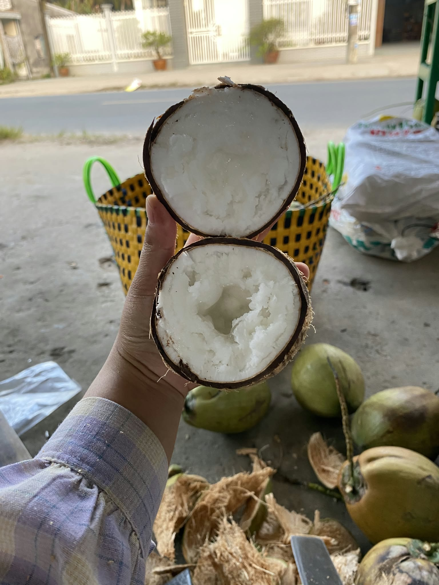
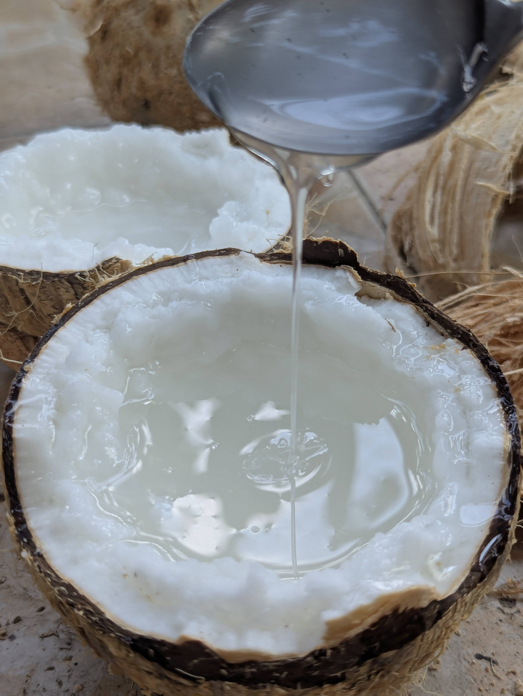

Cách Phân Biệt Dừa Sáp Thật Giả & Tuyệt Kỹ "Lắc Nước" Chọn Đúng Dừa Sáp Loại 1
Bổ sung kiến thức thực chiến từ Nghệ nhân Vựa Dừa Sáp Cầu Kè • Thời gian đọc: 7 phút
📌 Mục lục bài viết chuyên sâu:
- Vì sao nhìn vỏ ngoài không thể phân biệt Dừa Sáp với dừa thường?
- 4 Bước "Lắc Dừa Nghe Tiếng Nước" chuẩn thợ lành nghề Cầu Kè
- Bảng so sánh: Dừa Sáp Loại 1 vs Dừa Lạc (Dừa Trọc) vs Dừa Điếc
- Cảnh giác 3 chiêu trò bán "Dừa Sáp giá rẻ 30k - 50k" trên mạng
- Cách kiểm tra chất lượng cơm sáp ngay khi vừa nứt đôi gáo
1. Vì sao nhìn vỏ ngoài không thể phân biệt Dừa Sáp với dừa thường?
Một sự thật thú vị mà ít thực khách miền xa biết: Cây dừa sáp không cho ra 100% trái có sáp! Do đặc tính đột biến gen lặn tự nhiên kết hợp với thổ nhưỡng vùng đất pha cát ven sông Hậu (huyện Cầu Kè, tỉnh Trà Vinh), trên một buồng dừa 10 trái thì chỉ có khoảng 2 đến 3 trái thật sự kết sáp. 7 - 8 trái còn lại trên cùng buồng đó vẫn là dừa khô bình thường (dân nhà vườn gọi là "dừa lạc" hoặc "dừa trọc").
Nhìn bằng mắt thường từ bên ngoài, trái dừa sáp và trái dừa thường nằm chung một quầy có màu vỏ, hình dáng và kích thước giống nhau đến 99%. Chính vì vậy, nếu người mua không nắm được kỹ thuật kiểm tra âm thanh và tỷ trọng bên trong, khả năng mua nhầm trái dừa thường với giá tiền trăm ngàn là rất cao.
2. 4 Bước "Lắc Dừa Nghe Tiếng Nước" chuẩn thợ lành nghề Cầu Kè
Tại Vựa Dừa Sáp Cầu Kè, mỗi trái dừa trước khi xuất vườn đều phải đi qua đôi tay và đôi tai của những thợ tuyển dừa có trên 10 năm kinh nghiệm. Dưới đây là 4 bước thẩm định mà bạn hoàn toàn có thể tự áp dụng ngay khi cầm trái dừa trên tay:
Tiếng kêu "Bịch... bịch" trầm đục
Đưa trái dừa sát vào tai và lắc mạnh theo chiều dọc. Nếu nghe tiếng "óc ách, rọc rách" vang thanh thoát như nước lã thì 100% là dừa thường. Dừa sáp Loại 1 có nước đặc kẹo như hồ nên khi va vào lớp cơm sáp xốp sẽ phát ra tiếng "bịch... bịch" hoặc "ục... ục" rất trầm, nặng và đục.
Độ trì của nước kẹo bên trong
Khi bạn dừng tay đột ngột sau cú lắc, trái dừa sáp chuẩn sẽ cho cảm giác hơi giật nhẹ ở cổ tay do dòng nước sệt đặc di chuyển chậm bên trong lòng gáo. Trái dừa không có tiếng động hoàn toàn thì phải cẩn thận coi chừng dừa điếc (cạn nước).
Nhẹ hơn dừa thường cùng cỡ ~15%
Vì lớp cơm sáp nở bung xốp như bông tuyết và chiếm chỗ của phần nước, một trái dừa sáp khi cầm lên sẽ có cảm giác đầm chắc nhưng nhẹ hơn khoảng 10 - 15% so với trái dừa khô thường đầy ắp nước có cùng kích cỡ gáo.
Ba mắt dừa khô ráo, gáo nâu sậm
Khi đã gọt bớt xơ, hãy kiểm tra 3 "mắt dừa" trên đỉnh gáo. Trái dừa sáp tươi mới hái sẽ có mắt dừa khô ráo, cứng cáp, vỏ gáo màu nâu cánh gián tự nhiên, không bị rỉ nước chua hay có vết nứt chân chim.


3. Bảng so sánh thực tế: Dừa Sáp Loại 1 vs Dừa Lạc vs Dừa Điếc
Để giúp bà con không bao giờ bị nhầm lẫn, dưới đây là bảng đối chiếu 5 tiêu chí nhận diện giữa Dừa Sáp Loại 1 chính gốc, Dừa Lạc (dừa trọc mỏng cơm) và Dừa Điếc/Quá Lứa:
| Tiêu chí kiểm tra | Dừa Sáp Cầu Kè Loại 1 (Chuẩn) | Dừa Lạc / Dừa Trọc (Không sáp) | Dừa Điếc / Dừa Để Quá Lâu |
|---|---|---|---|
| Âm thanh khi lắc | Kêu "bịch bịch" hoặc "ục ục" trầm đục, có độ trì | Kêu "óc ách, rọc rách" thanh và vang lớn | Im lặng hoàn toàn (khô kiệt nước) hoặc kêu bộp bộp |
| Lớp cơm dừa | Dày 2 - 3cm, chia 2 tầng: ngoài giòn nhẹ, trong dẻo bùi như bơ | Mỏng dính (chỉ 0.5cm), cứng và xác như dừa kho thịt | Ngả màu vàng ố, có mùi dầu gắt hoặc nhớt chua |
| Nước dừa bên trong | Sánh đặc, kéo sợi nhẹ, vị ngọt thanh béo dịu | Loãng như nước lọc, vị nhạt hoặc hơi chua | Cạn khô không còn nước hoặc nước đục ngầu |
| Mùi hương khi bổ | Thơm lừng mùi sữa dừa tươi tự nhiên | Mùi dừa khô bình thường | Mùi hôi dầu hoặc mùi chua lên men |
📱 Trên điện thoại: Vuốt nhẹ bảng sang ngang để xem đầy đủ các cột
4. Cảnh giác 3 chiêu trò bán "Dừa Sáp giá rẻ 30.000đ - 50.000đ" trên mạng
Dạo quanh Facebook hay TikTok, không hiếm những bài quảng cáo rao bán "Xả kho dừa sáp Trà Vinh chỉ 35k - 50k/trái". Là nhà vườn gắn bó cả đời với cây dừa Cầu Kè, chúng tôi xin khẳng định: Giá thu mua dừa sáp Loại 1 tại gốc nhà vườn Trà Vinh chưa bao giờ dưới 75.000đ - 90.000đ/trái. Những nơi bán giá rẻ bất thường thường rơi vào 3 trường hợp sau:
- Tráo "Dừa Lạc" (Dừa không sáp trên cùng buồng): Người bán gom những trái dừa rớt sáp (giá tại vườn chỉ 10.000đ/trái), gọt vỏ bọc lưới vàng y hệt dừa sáp rồi giao cho khách. Khi khách bổ ra thấy cơm mỏng dính như dừa khô thường rồi nhắn tin khiếu nại thì bị chặn số.
- Bán "Dừa Sáp Kém" (Sáp mỏng 10% - 20%): Những trái dừa thu hoạch non hoặc tỷ lệ kết sáp quá thấp, chỉ có một lớp màng nhầy mỏng và toàn bộ bên trong là nước lỏng.
- Cân gian trọng lượng (Bao gồm cả vỏ xơ dày): Báo giá trái 1.3kg nhưng thực chất để nguyên lớp vỏ xơ dày nặng gần nửa ký, khi lột vỏ ra thì gáo dừa bé xíu bằng nắm tay (chỉ còn 500g - 600g). Tại Vựa Cầu Kè, trọng lượng công bố (800g - 1.5kg) là trọng lượng chuẩn sau khi đã gọt vỏ xơ gọn gàng.
5. Cách kiểm tra và kích hoạt Bảo Hành 1 Đổi 1 tại Vựa Dừa Sáp Cầu Kè
Dù nghệ nhân tuyển lựa kỹ đến 99%, dừa sáp vẫn là nông sản tự nhiên chưa bổ ra nên đôi khi vẫn có xác suất nhỏ (dưới 1%) gặp trái sáp mỏng không như ý. Hiểu rõ tâm lý xót tiền của khách hàng, Vựa Dừa Sáp Cầu Kè Trà Vinh áp dụng quy trình bảo hành minh bạch nhất thị trường:
🛡️ Quy trình Bảo Hành "Bổ Ra Không Sáp — Hoàn Tiền 100%":
- Khi nhận hàng, quý khách được mở thùng kiểm tra và lắc thử từng trái trước khi thanh toán cho shipper.
- Lúc bổ dừa ra thưởng thức, nếu phát hiện trái nào bị điếc, hư hỏng, chua nước hoặc không có sáp (dừa lạc), quý khách chỉ cần chụp 1 tấm ảnh hoặc quay clip ngắn 5 giây mặt cắt trái dừa.
- Gửi ngay qua Zalo/Hotline 086 678 6076: Nhà vườn sẽ chuyển khoản hoàn tiền 100% giá trị trái đó trong 5 phút hoặc gửi bù trái mới hoàn toàn miễn phí!
📚 Đọc thêm Cẩm Nang Dừa Sáp Cầu Kè:
An Tâm Thưởng Thức Dừa Sáp Loại 1 Chuẩn Cầu Kè
Giá tận vườn từ 99.000đ/trái • Miễn phí vận chuyển toàn quốc từ 2 trái • Tặng kèm Sữa đặc & Đậu phộng rang cho đơn từ 300k.